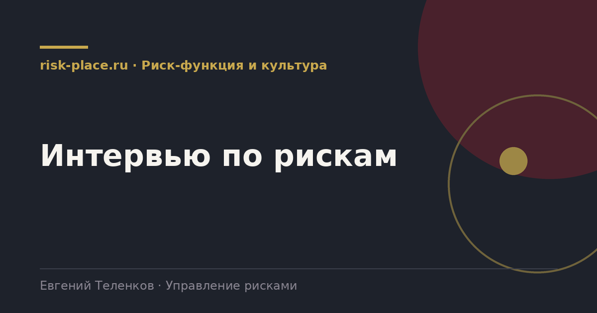

Главная · Библиотека · Риск-функция и культура · Интервью по рискам
Библиотека · Риск-функция и культура
Формат один на один дает то, чего не даст сессия. Люди говорят вещи, которые не скажут при коллегах.

Интервью выигрывает в трех ситуациях. Когда риск связан с зоной ответственности конкретного руководителя и признание проблемы при коллегах для него неудобно. Когда нужна глубина по узкой теме, где остальным участникам нечего добавить. И когда в компании слабая культура и групповое обсуждение сводится к согласию с начальником.
Оптимальная схема для первого построения системы, серия интервью с ключевыми руководителями, затем сессия, на которой обсуждается уже собранный материал. Так снимается и проблема молчания, и проблема поверхностности.
Порядок вопросов важен, он ведет от общего к болезненному.
| Ответ собеседника | Что за ним обычно стоит | Как продолжить |
|---|---|---|
| У нас все под контролем | Осторожность или непонимание цели разговора | Спросить про конкретный прошлогодний сбой и его причину |
| Главный риск это недофинансирование | Попытка использовать разговор для запроса бюджета | Уточнить, какое конкретно событие произойдет и с какой вероятностью |
| Все риски внешние | Снятие с себя ответственности | Спросить, что компания может сделать, чтобы пережить это событие |
| Назовет только чужие риски | Защитная реакция | Вернуть в его зону вопросом про отпуск на месяц |
| Перечислит текущие задачи | Смешение проблем и рисков | Разделить явно, что уже происходит и что может произойти |
Первое, договориться о том, как будет использован материал. Обычная формулировка, риски войдут в реестр без указания источника, а прямые цитаты не будут никому передаваться. Это надо сказать вслух в начале.
Второе, не записывать под диктовку в момент разговора. Короткие пометки, полная запись сразу после. Человек, за которым стенографируют, говорит осторожнее.
Третье, закончить вопросом о том, что собеседник хотел бы передать руководству, но не имеет удобного случая. Этот вопрос регулярно дает самую ценную часть интервью.
Частые вопросы
Одна форма для любого вопроса
Расскажем о ближайших датах, предложим формат под ваш состав участников и назовем порядок бюджета.
Предпочитаете почту — напишите на info@risk-place.ru. Адрес: Москва, улица Скаковая, 32с2.
 risk-
risk-